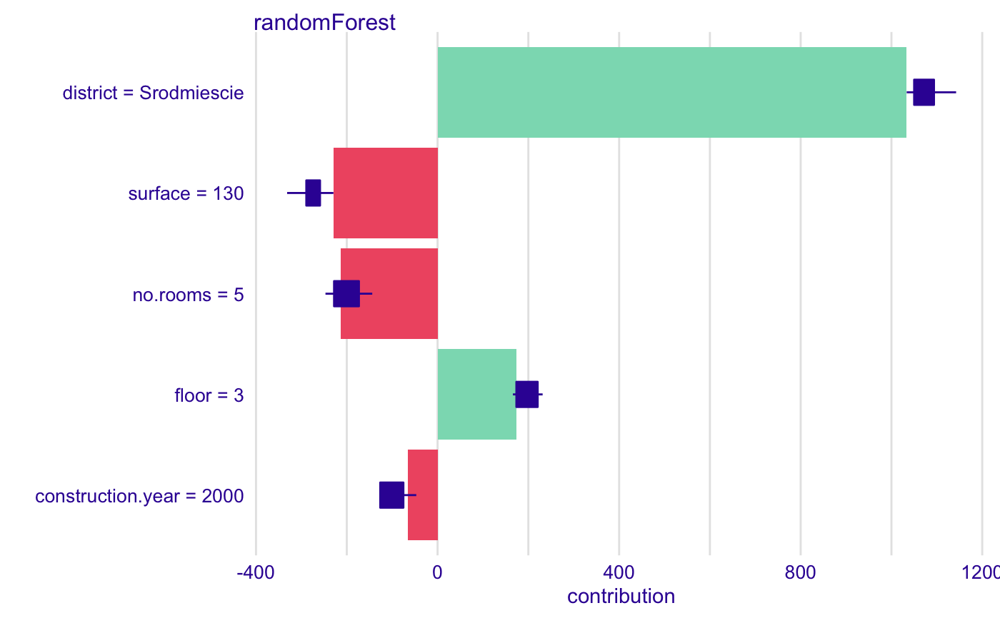
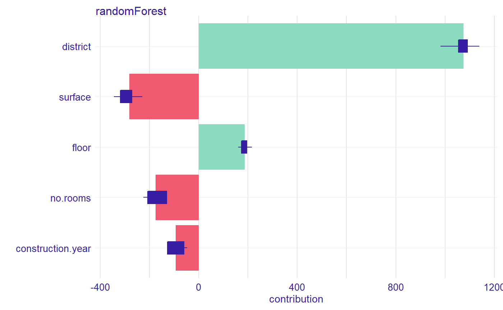
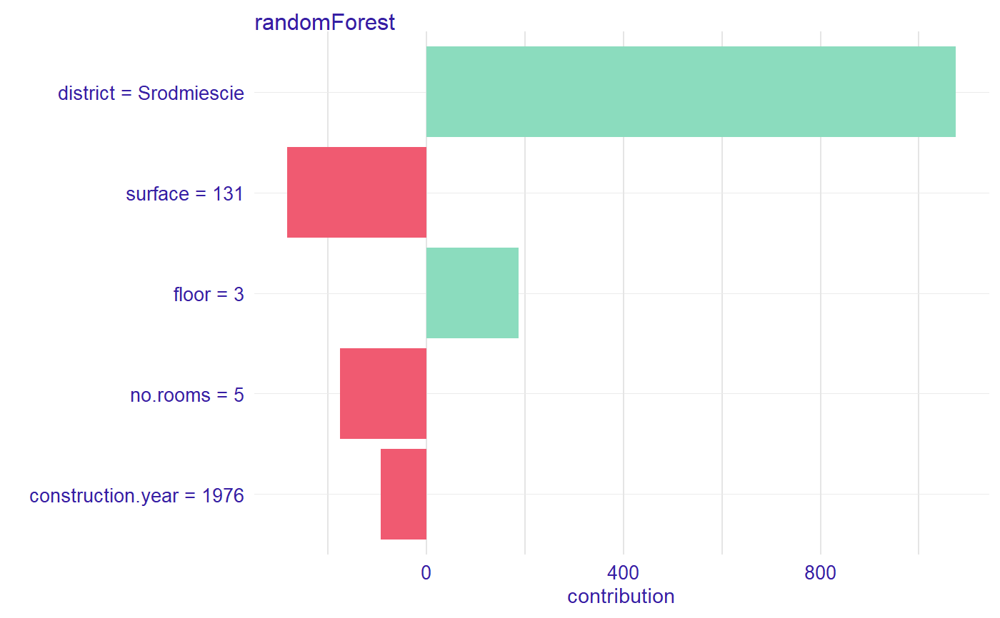

Plot Generic for Break Down Uncertainty Objects
Source:R/plot_break_down_uncertainty.R
plot.break_down_uncertainty.RdPlot Generic for Break Down Uncertainty Objects
# S3 method for break_down_uncertainty plot(x, ..., vcolors = DALEX::colors_breakdown_drwhy(), show_boxplots = TRUE)
Arguments
| x | an explanation created with |
|---|---|
| ... | other parameters. |
| vcolors | named vector with colors. |
| show_boxplots | logical if `TRUE` (default) boxplot will be plotted to show uncertanity of attributions |
Value
a `ggplot2` object.
References
Explanatory Model Analysis. Explore, Explain and Examine Predictive Models. https://pbiecek.github.io/ema
Examples
library("DALEX") library("iBreakDown") # Toy examples, because CRAN angels ask for them titanic <- na.omit(titanic) set.seed(1313) titanic_small <- titanic[sample(1:nrow(titanic), 500), c(1,2,6,9)] model_titanic_glm <- glm(survived == "yes" ~ gender + age + fare, data = titanic_small, family = "binomial") explain_titanic_glm <- explain(model_titanic_glm, data = titanic_small[,-9], y = titanic_small$survived == "yes")#> Preparation of a new explainer is initiated #> -> model label : lm ( default ) #> -> data : 500 rows 4 cols #> -> target variable : 500 values #> -> model_info : package stats , ver. 3.6.1 , task regression ( default ) #> -> predict function : yhat.glm will be used ( default ) #> -> predicted values : numerical, min = 0.111212 , mean = 0.298 , max = 0.9430377 #> -> residual function : difference between y and yhat ( default ) #> -> residuals : numerical, min = -0.789032 , mean = 1.799189e-14 , max = 0.8594593 #> A new explainer has been created!#> min q1 median mean #> lm: age = 50 -0.042144817 -0.04145250 -0.041452499 -0.040497685 #> lm: fare = 13 -0.005977352 -0.00537534 -0.005339308 -0.005413666 #> lm: gender = male -0.102615297 -0.10261530 -0.099602437 -0.100482892 #> lm: survived = no 0.000000000 0.00000000 0.000000000 0.000000000 #> q3 max #> lm: age = 50 -0.038439639 -0.038403606 #> lm: fare = 13 -0.005339308 -0.005285033 #> lm: gender = male -0.098964393 -0.098964393 #> lm: survived = no 0.000000000 0.000000000plot(bd_rf)# \donttest{ ## Not run: library("randomForest") set.seed(1313) model <- randomForest(status ~ . , data = HR) new_observation <- HR_test[1,] explainer_rf <- explain(model, data = HR[1:1000,1:5], y = HR$status[1:1000])#> Preparation of a new explainer is initiated #> -> model label : randomForest ( default ) #> -> data : 1000 rows 5 cols #> -> target variable : 1000 values #> -> target variable : Please note that 'y' is a factor. ( WARNING ) #> -> target variable : Consider changing the 'y' to a logical or numerical vector. #> -> target variable : Otherwise I will not be able to calculate residuals or loss function. #> -> model_info : package randomForest , ver. 4.6.14 , task classification ( default ) #> -> predict function : yhat.randomForest will be used ( default )#> Warning: the condition has length > 1 and only the first element will be used#> -> predicted values : predict function returns multiple columns: 3 ( WARNING ) some of functionalities may not work #> -> residual function : difference between y and yhat ( default )#> Warning: ‘-’ not meaningful for factors#> -> residuals : numerical, min = NA , mean = NA , max = NA #> A new explainer has been created!#> min q1 median #> randomForest.fired: age = 57.73 -0.021328 0.019462 0.153816 #> randomForest.fired: evaluation = 2 -0.018856 0.009084 0.035996 #> randomForest.fired: gender = male -0.009380 0.005474 0.019250 #> randomForest.fired: hours = 42.32 0.167650 0.195686 0.230614 #> randomForest.fired: salary = 2 -0.270298 -0.172701 -0.160058 #> randomForest.ok: age = 57.73 -0.346842 -0.346842 -0.162470 #> randomForest.ok: evaluation = 2 0.028666 0.099847 0.125760 #> randomForest.ok: gender = male -0.282642 -0.162907 -0.021756 #> randomForest.ok: hours = 42.32 -0.106876 -0.089536 -0.053010 #> randomForest.ok: salary = 2 0.046824 0.118454 0.118552 #> randomForest.promoted: age = 57.73 -0.126732 -0.010081 -0.006132 #> randomForest.promoted: evaluation = 2 -0.201822 -0.172814 -0.164010 #> randomForest.promoted: gender = male -0.045880 -0.002331 -0.001994 #> randomForest.promoted: hours = 42.32 -0.247972 -0.235271 -0.178676 #> randomForest.promoted: salary = 2 -0.003902 0.001014 0.027152 #> mean q3 max #> randomForest.fired: age = 57.73 0.178679818 0.352974 0.362800 #> randomForest.fired: evaluation = 2 0.023217636 0.041020 0.045408 #> randomForest.fired: gender = male 0.103037273 0.187181 0.280686 #> randomForest.fired: hours = 42.32 0.244756909 0.291987 0.351330 #> randomForest.fired: salary = 2 -0.157277636 -0.125635 -0.070866 #> randomForest.ok: age = 57.73 -0.167283636 -0.005432 0.005860 #> randomForest.ok: evaluation = 2 0.119492364 0.129860 0.196252 #> randomForest.ok: gender = male -0.096862545 -0.008832 -0.003480 #> randomForest.ok: hours = 42.32 -0.045487455 -0.001451 0.030996 #> randomForest.ok: salary = 2 0.129991273 0.142728 0.268992 #> randomForest.promoted: age = 57.73 -0.011396182 0.011513 0.015468 #> randomForest.promoted: evaluation = 2 -0.142710000 -0.110062 -0.058120 #> randomForest.promoted: gender = male -0.006174727 0.002231 0.023564 #> randomForest.promoted: hours = 42.32 -0.199269455 -0.173865 -0.156930 #> randomForest.promoted: salary = 2 0.027286364 0.041506 0.077562plot(bd_rf)# example for regression - apartment prices # here we do not have intreactions model <- randomForest(m2.price ~ . , data = apartments) explainer_rf <- explain(model, data = apartments_test[1:1000,2:6], y = apartments_test$m2.price[1:1000])#> Preparation of a new explainer is initiated #> -> model label : randomForest ( default ) #> -> data : 1000 rows 5 cols #> -> target variable : 1000 values #> -> model_info : package randomForest , ver. 4.6.14 , task regression ( default ) #> -> predict function : yhat.randomForest will be used ( default ) #> -> predicted values : numerical, min = 2052.033 , mean = 3487.71 , max = 5776.623 #> -> residual function : difference between y and yhat ( default ) #> -> residuals : numerical, min = -632.8469 , mean = 1.070017 , max = 1328.352 #> A new explainer has been created!bd_rf <- break_down_uncertainty(explainer_rf, apartments_test[1,], path = c("floor", "no.rooms", "district", "construction.year", "surface")) bd_rf#> min q1 median #> randomForest: construction.year = 1976 -128.5908 -110.1911 -68.37002 #> randomForest: district = Srodmiescie 981.8193 1036.9753 1054.79081 #> randomForest: floor = 3 172.8786 183.5605 193.26996 #> randomForest: no.rooms = 5 -229.8610 -225.7194 -209.30956 #> randomForest: surface = 131 -272.2211 -266.0785 -249.94062 #> mean q3 max #> randomForest: construction.year = 1976 -81.56069 -52.48483 -47.64365 #> randomForest: district = Srodmiescie 1046.51524 1054.79081 1091.59037 #> randomForest: floor = 3 195.40642 209.02407 215.52532 #> randomForest: no.rooms = 5 -201.00985 -204.86547 -130.21186 #> randomForest: surface = 131 -249.01688 -229.21426 -229.21426plot(bd_rf)#> min q1 median #> randomForest: construction.year = 1976 -128.5908 -127.7759 -92.75977 #> randomForest: district = Srodmiescie 981.8193 1054.7908 1069.75828 #> randomForest: floor = 3 159.4690 172.8786 184.31616 #> randomForest: no.rooms = 5 -225.7194 -207.9039 -198.81536 #> randomForest: surface = 131 -345.1926 -318.0552 -277.00849 #> mean q3 max #> randomForest: construction.year = 1976 -93.72824 -60.08701 -47.64365 #> randomForest: district = Srodmiescie 1075.07584 1091.59037 1139.28110 #> randomForest: floor = 3 186.95249 194.98506 215.52532 #> randomForest: no.rooms = 5 -175.28235 -130.21186 -130.21186 #> randomForest: surface = 131 -282.68349 -272.14890 -229.21426plot(bd_rf)# }